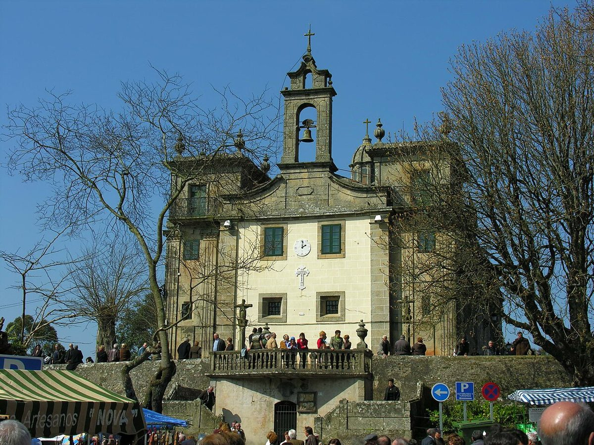

Las excepciones · Elecciones: 23 de julio de 2023
Lalín y Vilanova de Arousa, los dos municipios donde el PP saca más voto por encima de lo que predicen sus datos
Por su renta, su edad, su paro y su tamaño, a Lalín le correspondería dar a PP, Vox y Cs el 43,8 % del voto. El 23J les dio el 64,4 %. En Vilanova de Arousa, el 61,6 % frente a un 42,1 % previsto. Son las dos mayores diferencias al alza entre los municipios de más de 10.000 habitantes de España, y las dos están en Pontevedra.
Dato: verificable y reproducible
La pregunta: ¿Dónde vota la derecha mucho más de lo que su perfil social haría esperar?
La otra cara de las excepciones
DatoEsta serie empezó con Puerto Real, el municipio que menos vota a la derecha en relación con su perfil. Este es el extremo contrario: los lugares donde PP, Vox y Cs sacan mucho más de lo que predice el modelo. Los dos primeros de la lista son gallegos y de la misma provincia.
DatoLalín, en el interior de Pontevedra, tiene 19.938 habitantes, una renta de 18.912 euros por unidad de consumo y un paro del 13,3 % en 2021. El modelo le asigna un 43,8 % de voto a la derecha. Votó un 64,4 %: 20,6 puntos más. El PP, por sí solo, sacó el 59,4 %.
DatoVilanova de Arousa, en la costa, tiene 10.216 habitantes, 17.897 euros de renta y un paro del 17,3 %. Previsto: 42,1 %. Real: 61,6 %.
Un PP más fuerte que su provincia
DatoEn el conjunto de la provincia de Pontevedra, el PP sacó el 39,6 %; en Galicia, el 43,6 %. En Lalín sacó el 59,4 % y en Vilanova, el 55,9 %.
DatoNo es un año aislado. El PP no ha bajado del 39,9 % en Lalín en ninguna de las ocho generales desde 2004, y su mejor resultado fue el de 2011, con el 68,5 %. Su peor resultado fue el de abril de 2019, con el 39,9 %.
DatoEn las municipales también gana con holgura: 53,1 % en Lalín y 61,1 % en Vilanova en mayo de 2023.
El resto de la lista
DatoDetrás vienen Bolaños de Calatrava (Ciudad Real, +17,6), Griñón (Madrid, +16,6), Lepe (Huelva, +15,2), Campos (Illes Balears, +15,2), La Palma del Condado (Huelva, +15,0). Son municipios muy distintos entre sí, sin un patrón geográfico claro.
DatoVilanova de Arousa ya aparece en el Atlas: es el vecino de A Illa de Arousa, que vota más de 20 puntos menos al PP. La frontera entre los dos es, a la vez, la frontera entre una de las mayores excepciones al alza de España y un municipio que vota mucho más a la izquierda.
Sobre el terreno
DatoVilanova de Arousa es la cuna oficial de Ramón María del Valle-Inclán, nacido el 28 de octubre de 1866; su casa natal, el pazo de O Cuadrante, es hoy casa-museo. Fuentes: 1, 2
DatoLalín celebra desde 1969 la Feira do Cocido, que en 2020 fue declarada Fiesta de Interés Turístico Internacional. Fuentes: 1, 2
Lo que no sabemos
- HipótesisPor qué. Las hipótesis habituales en Galicia (la implantación territorial del PP, el peso de los liderazgos municipales) no están contrastadas en esta pieza con dos fuentes independientes.
Los datos
| Municipio | Provincia | Real | Previsto | Diferencia |
|---|---|---|---|---|
| Lalín | Pontevedra | 64,4 | 43,8 | +20,6 |
| Vilanova de Arousa | Pontevedra | 61,6 | 42,1 | +19,5 |
| Bolaños de Calatrava | Ciudad Real | 75,6 | 58,0 | +17,6 |
| Griñón | Madrid | 71,2 | 54,6 | +16,6 |
| Lepe | Huelva | 68,4 | 53,2 | +15,2 |
| Campos | Illes Balears | 64,6 | 49,4 | +15,2 |
| La Palma del Condado | Huelva | 65,4 | 50,5 | +15,0 |
| Tudela | Navarra | 52,6 | 37,8 | +14,8 |
| Boadilla del Monte | Madrid | 76,2 | 61,7 | +14,6 |
| Villanueva de la Cañada | Madrid | 74,0 | 59,6 | +14,5 |
Método y fuentes
- Qué se compara
- Los 770 municipios españoles de más de 10.000 habitantes, frente a lo que predice el modelo municipal de esta serie.
- Límites
- El modelo no es una explicación. «Derecha» suma PP, Vox y Cs. Los municipios gallegos son extensos y dispersos: el tamaño en habitantes no recoge bien su estructura en parroquias.
- Metodología completa
- Cómo se calculan los porcentajes, el modelo, los gemelos y los escaños
- Fuentes
- Ministerio del Interior, resultados electorales por mesa (Infoelectoral). Congreso 2004-2023 vía pollspaindata, commit ee5ecda; municipales 2007-2023 de los ficheros de Infoelectoral
- INE, Atlas de Distribución de Renta de los Hogares 2023 (renta, edad, población), vía ineAtlas.data
- INE, Censo de Población y Viviendas 2021 (estudios, paro, extranjeros)
- Autoría
- Nacho
- Revisión de datos y texto
- Nacho, 2026-10-07
- Publicado · actualizado
- 2026-10-06 · 2026-10-07
- Correcciones
- Ninguna. Historial del Atlas
En esta serie
- Puerto Real vota 23 puntos menos a la derecha de lo que predicen sus datos: la mayor excepción de España
- Las cuencas mineras de Asturias votan a la derecha hasta 16 puntos menos de lo que predice su perfil, y a la izquierda como hace veinte años
- Jódar, el municipio de España que menos vota en relación con su perfil: 11 puntos por debajo en las generales